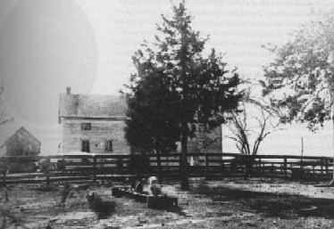

1835-1848
"That, the birthplace of the major-genius of all the ages and all the climes." Mark Twain, Following the Equator
Birthplace of Samuel Langhorne Clemens
1835-1839

picture courtesy of Mark Twain
"Recently
someone in Missouri has sent me a picture of the house I was born in.
Heretofore I have always stated
that it was a palace but I shall be more guarded now. The village had two streets...the rest of the avenues mere
lanes. Both the streets and the lanes were paved with the same material--tough black mud in wet times, deep dust
in dry. Most of the houses were of logs...there was a log church...perched upon short sections of logs, which elevated
it two or three feet from the ground...At first my father owned slaves but by and by he sold them and hired others by
the year from the farmers." Autobiography, 1-3
that it was a palace but I shall be more guarded now. The village had two streets...the rest of the avenues mere
lanes. Both the streets and the lanes were paved with the same material--tough black mud in wet times, deep dust
in dry. Most of the houses were of logs...there was a log church...perched upon short sections of logs, which elevated
it two or three feet from the ground...At first my father owned slaves but by and by he sold them and hired others by
the year from the farmers." Autobiography, 1-3
Quarles Family Farm
1839-1848 (summers)

picture courtesy of Mark Twain
"It
was a heavenly place for a boy, that farm of my uncle John's. The house
was a double log one, with a
spacious floor (roofed in) connecting it with the kitchen. In the summer the table was set in the middle of that
shady and breezy floor, and the sumptuous meals--well, it makes me cry to think of them...The farmhouse stood
in the middle of a very large yard and the yard was fenced in on three sides with rails and on the rear side with
high palings; against these stood the smokehouse; beyond the palings was the orchard; beyond the orchard were
the Negro quarters and the tobacco fields." Autobiography, 4-5
spacious floor (roofed in) connecting it with the kitchen. In the summer the table was set in the middle of that
shady and breezy floor, and the sumptuous meals--well, it makes me cry to think of them...The farmhouse stood
in the middle of a very large yard and the yard was fenced in on three sides with rails and on the rear side with
high palings; against these stood the smokehouse; beyond the palings was the orchard; beyond the orchard were
the Negro quarters and the tobacco fields." Autobiography, 4-5


On to Hannibal